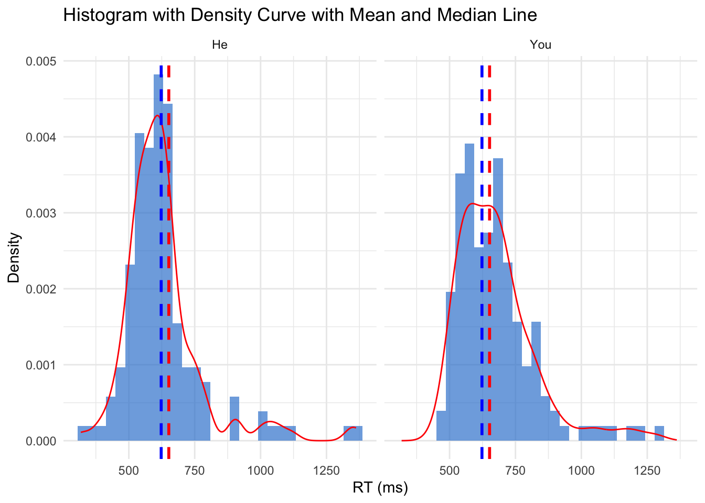
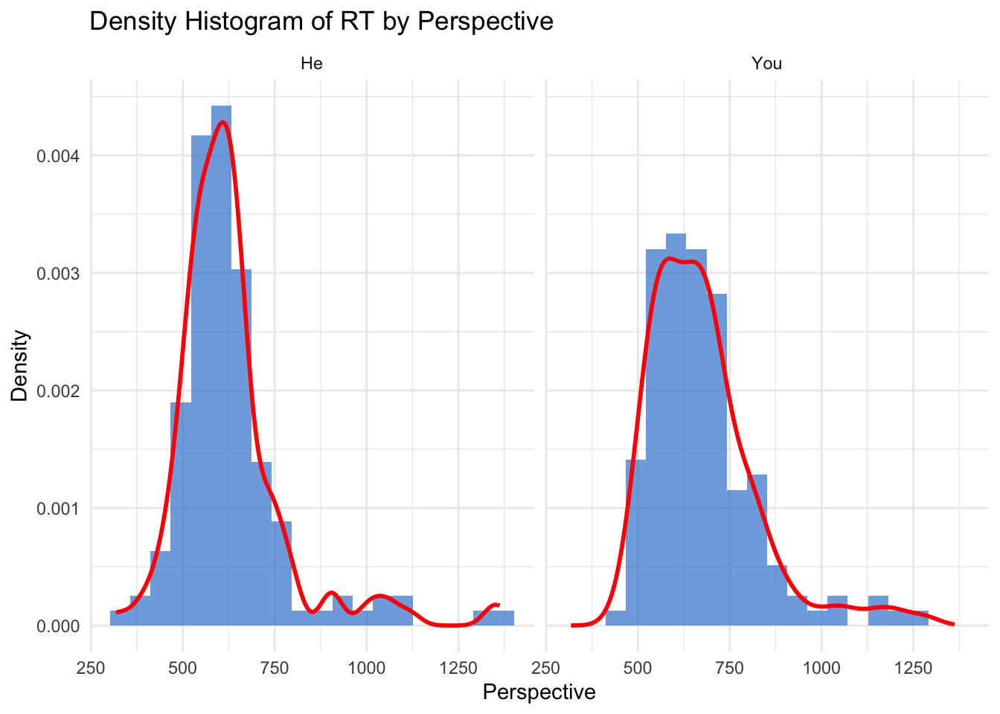
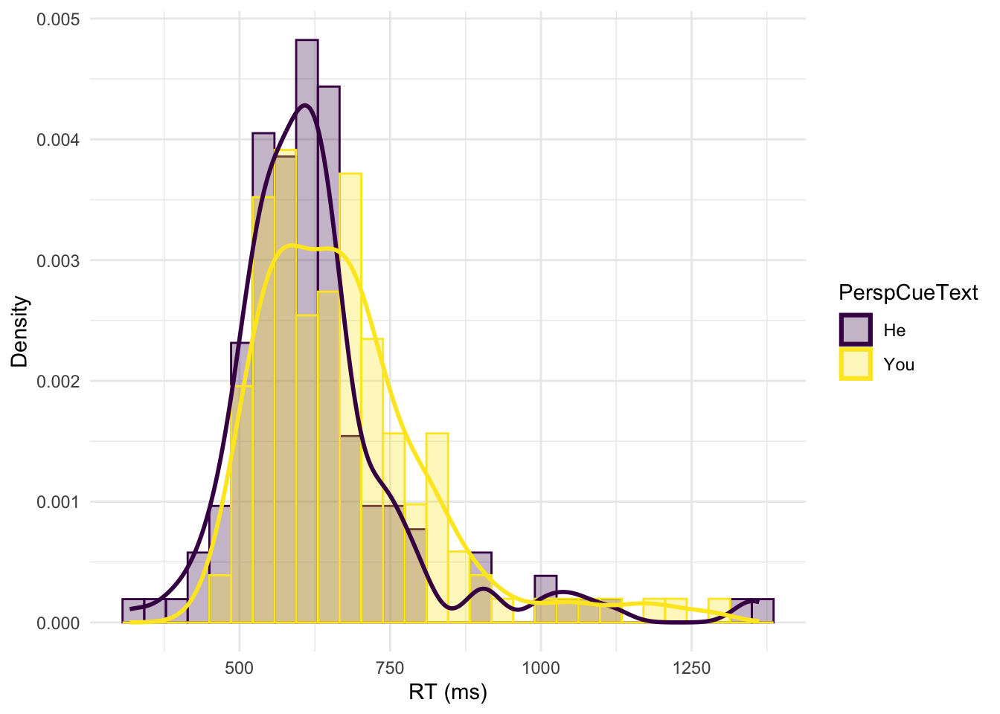
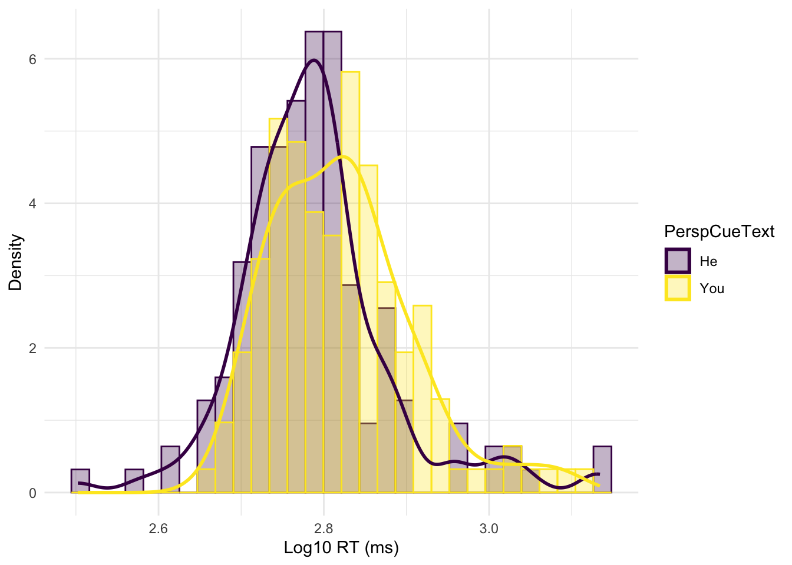
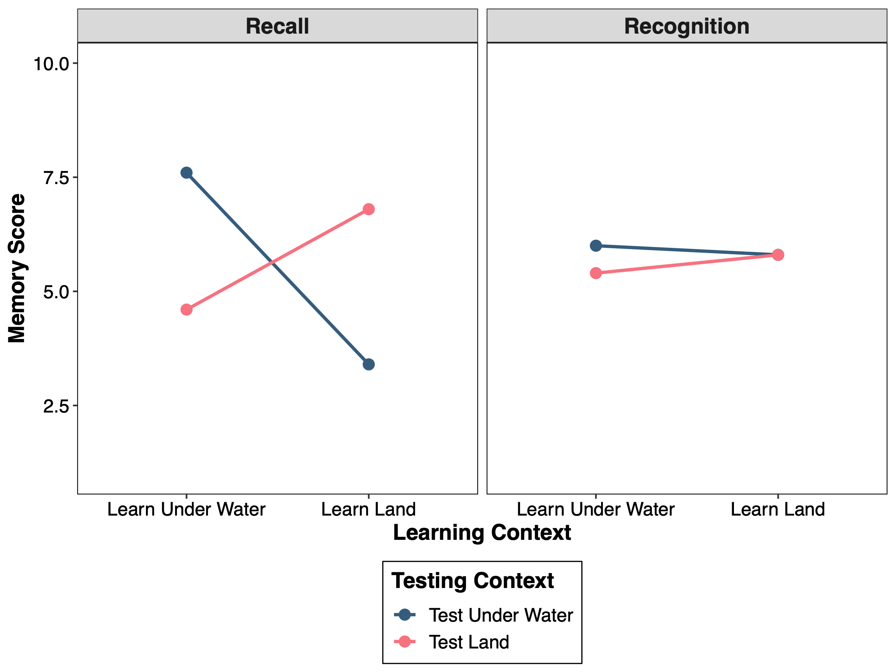
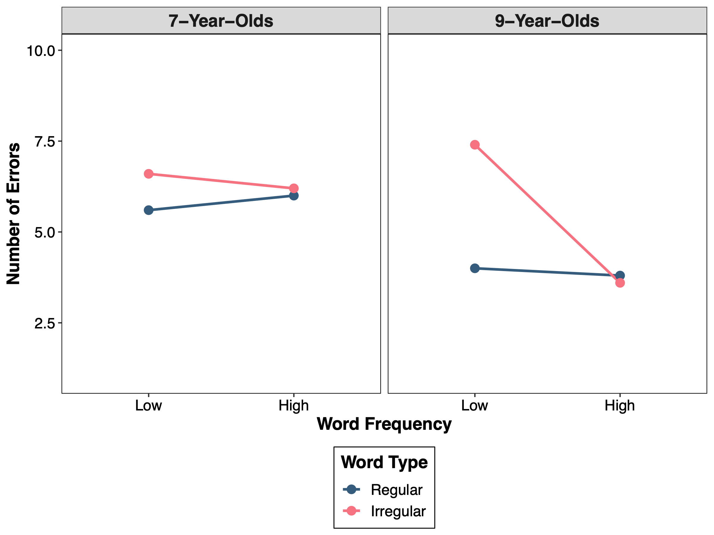

library("tidyverse") # For data storage and manipulation
library("tidyr") # For tidy data
library("rstatix") # For descriptives statistics, outlier detection, running the ANOVAs etc.
source("simple.R") # Custom function for generating the simple main effects8. Raw Data Processing 2 and Three-Factor ANOVA
Emma Mills, Mark Hurlstone
Last week we began to see how raw data, straight from a data collection platform could be imported to R for processing before analysis. This is the hidden work, often not reported in any detail in papers but in any script that is made available with raw data will be clear to see.
While in the labs I felt that maybe the majority of you were underwhelmed by the activity. I can understand that on one level - at the moment there is no real buy in for you. The activity is neither related to an experiment that you have designed nor is there a deadline by which you must submit an analysis. It doesn’t yield and p-values or asterisks by which you can claim that you have ‘done’ an analysis, so it may feel as if you are not going in any clear direction. Just as with the PsychoPy tasks, this experience was likely a relevant one and you now have the start of a resource that with some rethinking could be adapted to tidy a raw dataset. Next term, we will practices with a dataset from Qualtrics.
This week we continue and complete the second half of the raw data processing. We examine the skewness and kurtosis of our response time data by condition. And we make decisions about what to do if skewness and kurtosis levels are high.
For statistical methods, we move to three-factor ANOVA. Big models! The process is much the same for the ANOVA as for 2*2 designs. There is some extra processing after the fact to know in which direction any effects go.
When you go to the lecture for the statistics content, you will see that this content has previously occupied the week 9 space of a statistics module. You will also see this on the slides. This is not an important consideration. The learning content is good for week 8 of this module for this year.
Lectures
Watch Lecture 1 here
Download the lecture 1 slides here
Watch Lecture 2 Part 1 here
Watch Lecture 2 Part 2 here
Watch Lecture 2 Part 3 here
Download the lecture 2 slides here, and here for a larger version.
This Week’s Lab
Part 1: We will continue our work with the small set of files that we began to process in week 7. I recommend that for this part of the lab, you continue to work in your week 7 folder (or however you organise your files), rather than starting a fresh script. Open last week’s data processing script, run your code from last week and then begin the Part 1 tasks for today to complete the process.
Part 2: In today’s lab session, we will demonstrate how to perform a three-factor fully within-participants and mixed ANOVA in R (using the two hypothetical data sets presented in the lecture), and how to analyze a three-way interaction using the procedures described in the lecture. In this lab session, I am also going to show you a better way of rounding the values in dataframes than the options(digits = ) command used in earlier lab sessions.
If you get stuck at any point, be proactive and ask for help from one of the GTAs.
Learning Objectives
By the end of the lab you should be able to:
- Create plots to “eyeball” the shape of a distribution
- Calculate skewness and kurtosis values per condition
- Understand how to make a decision to trim or transform data
- Perform a log10 transformation on data
- Have an awareness of how to backtransform log10 data to its original scale for reporting
- Conduct a three-factor ANOVA
- Understand when to perform a simple main effects analysis
- Perform a simple main effects analysis
- Report the results in a results section standard paragraph for a factorial ANOVA
Note: We will only be providing code for new commands that you have not previously done. From now on, you will be generating your own code for a large portion of the lab exercises. So, it would be a good idea to have the lab class materials from previous weeks readily accessible to remind you how to accomplish different tasks.
There are hints in the webpage main body text - please take time to read this and make sense of it to help you as you use earlier code as a model for your new code; we have put ‘check your answer’ boxes throughout and the staff can also assist
After you have created a folder for today’s session, it’s time to add the Week 8 files. You already have the data for Part 1 from last week. You can download the data needed for part 2 of the lab here and upload to this week’s folder.
Before moving on, let’s load the relevant libraries that we will be using in today’s session.
There is also one other package: moments. From this package, we will call the skewness and the kurtosis function to measure the shape of our RT distribution. This is not installed in the system library and so needs first to be installed and then loaded. The code to install the package is commented below; uncomment it to run it if you need to and then load the library once it is installed.
Part 1: Raw Data Processing 2
For the first part of the lab, work in the week 7 folder. Go back to the part 1 script from week 7 lab and run it through until you get to the diagrams. And then we will pick up from there.
If you have run the script until the very end, you will have 11 datasets. We only need to keep three as useful datasets to carry on, so the next code cleans the environment. Makes it a little less cluttered.
# remove the named datasets
rm(data_consistent,
data_red,
data_red_count,
data_red_means,
data_rt_clean,
noisy_ps,
Practice_check,
Practice_data)So you should have data_error_analysis, data_rt_analysis, and data_all. The first two datasets are needed for analysis and the last dataset is the original dataset from which all the other datasets can be regenerated if necessary to your workflow.
In order to be able to report how many trials you may lose if you have to wrangle your data to look more like a normal distribution, you need to count how many observations are in each condition to begin with. The code below does this:
# Count the trials by perspective
data_cond_count <- data_rt_analysis %>%
# Create separate participant-condition groups
group_by(PerspCueText) %>%
summarise(
Count = sum(resp.corr),
# Return an ordinary, ungrouped dataframe
.groups = "drop"
)
data_cond_count# A tibble: 2 × 2
PerspCueText Count
<chr> <dbl>
1 He 144
2 You 142Do you remember that we only had two errors in the dataset - from the difference between the two perspective conditions, it looks like both errors were made in the You level of the condition. But here you have the number of trials for each level of perspective before we begin to look at whether we need to do any shaping.
Calculating skewness and kurtosis values
Now we can begin to look at skewness and kurtosis values for each condition. We use a familiar chunk of code - one that you have used many times in calling descriptive statistics, and call our four moments (mean, SD, skewness and kurtosis) plus the median for RT on each level of perspective:
# Combine the trials for each person in each condition
data_cond_means <- data_rt_analysis %>%
# Create separate participant-condition groups
group_by(PerspCueText) %>%
summarise(
Median_RT = median(rt),
Mean_RT = mean(rt),
SD_RT = sd(rt),
Skewness = skewness(rt),
Kurtosis = kurtosis (rt),
# Return an ordinary, ungrouped dataframe
.groups = "drop"
)
data_cond_means# A tibble: 2 × 6
PerspCueText Median_RT Mean_RT SD_RT Skewness Kurtosis
<chr> <dbl> <dbl> <dbl> <dbl> <dbl>
1 He 601. 628. 153. 2.16 9.90
2 You 650. 675. 147. 1.57 6.30Lets take a look at our values and see what they tell us. We are not looking between the He and You levels here. We are looking within the He condition first and then we do the You condition second. This is a little different than when we generate the mean and others for descriptive statitstics when we may be looking between the levels to see if one is faster than the other for instance.
He condition
- Median - the middle value of the dataset is RT = 600.6 ms
- Mean - the mean RT value is 628.4 ms. This value is larger than the median RT value = which suggests we have a positive skew in the RT distribution for this condition
- SD = 1 SD = 152.9 ms
- skewness value = 2.2: higher than 0 and also greater than 1 which is what we would tolerate for normality.
- kurtosis = 9.9 = much higher than three!
How might you describe the distribution in words?
You condition
- Median - the middle value of the dataset is RT = 650 ms
- Mean - the mean RT value is 675.4 ms. This value is larger than the median RT value = which suggests we have a positive skew in the RT distribution for this condition
- SD = 1 SD = 147.4 ms
- skewness value = 1.6: higher than 0 and also greater than 1 which is what we would tolerate for normality.
- kurtosis = 6.3 = much higher than three!
How might you describe the distribution in words?
What type of kurtosis is present in our data here for both conditions?
What does this type of kurtosis tell us about the data?
You already know a process for identifying outliers in relation to data that is structured for ANOVA analysis methods. So I won’t go into that here. You can try that out for yourself. Next term, I will show you a method of identifying outliers per participant. This is a form of data trimming that will help with skewness, but removes data when they are extreme values for an individual participant, so if your participant is slow relative to other participants, slow trials from them may be retained in the dataset because they are not extreme values or outliers given their range of responses. Pretty cool!
Eyeballing the distributions by condition
Let’s visualise the distribution by Perspective level: There are three types of visualisation here. Run each one and see which one you think shows the shape, skewness and kurtosis of the distribution best.
# Histogram with kernel density
# note that we have changed the y axis from count in the histogram
# to density here, to have both the histogram and density curve
# plotted to the same scale
ggplot(data_rt_analysis, aes(x = rt, y = after_stat(density))) +
geom_histogram(fill = "#3a86d4", alpha = 0.7) +
labs(title = "Histogram with Density Curve with Mean and Median Line",
x = "RT (ms)",
y = "Density") +
theme_minimal() +
geom_density(colour = "red", alpha = 1) +
geom_vline(aes(xintercept = mean(rt)),
color = "red", linetype = "dashed", linewidth = 1) +
geom_vline(aes(xintercept = median(rt)),
color = "blue", linetype = "dashed", linewidth = 1) +
facet_wrap(~PerspCueText)`stat_bin()` using `bins = 30`. Pick better value with `binwidth`.
# Create density histogram faceted by Perspective
ggplot(data_rt_analysis, aes(x = rt)) +
geom_histogram(
aes(y = after_stat(density)), # Convert counts to density
bins = 20, # Number of bins
fill = "#3a86d4", # Fill color
alpha = 0.7 # Transparency
) +
geom_density(
color = "red", # Density curve color
linewidth = 1 # Line thickness
) +
facet_wrap(~ PerspCueText) + # Facet by Perspective
labs(
title = "Density Histogram of RT by Perspective",
x = "Perspective",
y = "Density"
) +
theme_minimal() # Clean theme
(plot_rt <- ggplot(data_rt_analysis, aes(x = rt, fill = PerspCueText, colour = PerspCueText)) +
geom_histogram(aes(y = after_stat(density)),
bins = 30, alpha = 0.3, position = "identity") +
geom_density(alpha = 0, linewidth = 1) +
scale_fill_viridis_d() +
scale_colour_viridis_d() +
labs(x = "RT (ms)", y = "Density", fill = "PerspCueText", colour = "PerspCueText") +
theme_minimal())
Having watched the lecture, which process do you think you is the better choice here? data trimming or data transformation?
Data transformation: Log10()
We will use a log10 transformation, but you can also use natural log. These are two very typical log transformations in the literature. I will put both pieces of code in here, making a new dataset that is called data_rt_transform.
# Transform using log10 safely
data_rt_transform <- data_rt_analysis %>%
mutate(
RT_log10 = if_else(rt > 0, log10(rt), NA_real_) # NA for invalid values
)
# Transform using natural log safely
data_rt_transform <- data_rt_transform %>%
mutate(
RT_log = if_else(rt > 0, log(rt), NA_real_) # NA for invalid values
)What does it mean to say Transform using natural log safely? You will notice that the command tells mutate only to transform the rt value if it is greater than 0, and otherwise return an NA value. This is important to know. You cannot log transform a value of 0. There are ways around this but it is out of scope for this lab at this time. Suffice to say that if you have values of 0 in a variable that you want to transform, then this is the time to reach out for extra help!
Let’s draw them again before calculating the skewness and kurtosis values for the transformed rt. We reuse the code from above, and just change some parts. Change the dataframe name from data_rt_analysis to data_rt_transform and the variable rt to RT_log10 for the first plot:
(plot_log10rt <- ggplot(data_rt_transform, aes(x = RT_log10, fill = PerspCueText, colour = PerspCueText)) +
geom_histogram(aes(y = after_stat(density)),
bins = 30, alpha = 0.3, position = "identity") +
geom_density(alpha = 0, linewidth = 1) +
scale_fill_viridis_d() +
scale_colour_viridis_d() +
labs(x = "Log10 RT (ms)", y = "Density", fill = "PerspCueText", colour = "PerspCueText") +
theme_minimal())
Hmm, they look different - there appears to be more tail on the left hand side of the graph now than before. This type of “eyeballing” is not proof positive, only a first look. So lets do that iterative loop part of the processing and recaluculate skewness and kurtosis values. Reuse the code from earlier, but change the dependent variable rt to RT_log10; change the dataframe from data_rt_analysis to data_rt_transform. Call the new dataframe data_cond_means_log.
# Combine the trials for each person in each condition
data_cond_means_log <- data_rt_transform %>%
# Create separate participant-condition groups
group_by(PerspCueText) %>%
summarise(
Median_RT = median(RT_log10),
Mean_RT_log10 = mean(RT_log10),
SD_RT_log10 = sd(RT_log10),
skewness(RT_log10),
kurtosis (RT_log10),
# Return an ordinary, ungrouped dataframe
.groups = "drop"
)
data_cond_means_log# A tibble: 2 × 6
PerspCueText Median_RT Mean_RT_log10 SD_RT_log10 `skewness(RT_log10)`
<chr> <dbl> <dbl> <dbl> <dbl>
1 He 2.78 2.79 0.0925 0.909
2 You 2.81 2.82 0.0860 0.857
# ℹ 1 more variable: `kurtosis(RT_log10)` <dbl>Lets interpret once more: Remember we are looking within the He condition first and then the You condition second.
He condition
- Median - the middle value of the dataset is log10 RT = 2.8 ms
- Mean - the mean log10 RT value is 2.8 ms. This value is the same as the median log10 RT value = which suggests that the distribution has moved towards a more normal shape, since the median and mean values align.
- SD = 1 SD = 0.09 ms
- skewness value = 0.9: higher than 0 but less than 1 which is what we would tolerate for normality.
- kurtosis = 5.8 = reduced from original RT value of 9 still much higher than three!
How might you describe the distribution in words? A more normal shaped distribution but still with quite a pointy peak?
You condition
- Median - the middle value of the dataset is log10 RT = 2.8 ms
- Mean - the mean log10 RT value is 2.8 ms. This value is the same as the median log10 RT value = which suggests that the distribution has moved towards a more normal shape, since the median and mean values align.
- SD = 1 SD = 0.08 ms
- skewness value = 0.8: higher than 0 but less than 1 which is what we would tolerate for normality.
- kurtosis = 3.9 = still higher than three!
How might you describe the distribution in words? A more normal shaped distribution; pointy peak is reduced but still above 3.
At this point we will stop with the data processing.
Reducing many observations per participant to one observation per participant per condition
Next steps would be to get an average per condition per participant for the dependent variable to be able to perform the relevant ANOVA
# Get descriptive statistics
Part_descriptives = data_rt_transform %>%
# Organise the output by the "PartID", "PerspCueText"
group_by(PartID, PerspCueText) %>%
# Request means, standard deviations, and confidence intervals
get_summary_stats(RT_log10, show = c("mean", "sd"))
# Round the statistics to two decimal places
Part_descriptives$mean = round(Part_descriptives$mean, 2)
Part_descriptives$sd = round(Part_descriptives$sd, 2)
# Print the results
print.data.frame(Part_descriptives) PartID PerspCueText variable n mean sd
1 1 He RT_log10 48 2.78 0.06
2 1 You RT_log10 47 2.84 0.09
3 2 He RT_log10 48 2.79 0.09
4 2 You RT_log10 47 2.82 0.09
5 3 He RT_log10 48 2.80 0.12
6 3 You RT_log10 48 2.80 0.08Because we now have one observation per participant per condition, we are ready for our ANOVA. We only have 6 observations here so there is no point in actually running an analysis. But if you had thirty participants you would have 60 observations and that would be a good data set. You would next do your assumptions checks and outlier checks etc before your inferential analysis of the ANOVA.
Backtransforming from Log10
A last word: once you have your model findings, Any RT values that you get in results would need to be backtransformed to the original millisecond scale for ease of reporting. This is quite simple with the following code:
The first line of code in the next chunk exponentiates the base 10 to the power of the RT_log10 value in the data_rt_transform$RT_log10 variable and saves it in an object called original_RT. I then call the first six values of the original_RT object
original_RT <- 10^data_rt_transform$RT_log10
head(original_RT)[1] 748.0326 662.0540 482.9941 647.3537 629.8060 596.4704To compare the backtransformed RT values with the real rt values (the variable that we left untouched), I call the first six values of the data_rt_transform$rt variable. See how they are identical.
head(data_rt_transform$rt)[1] 748.0326 662.0540 482.9941 647.3537 629.8060 596.4704What did I just do? Lets look at it for the first row of the dataframe
What is the first RT_log10 value
data_rt_transform$RT_log10[1][1] 2.873921what is the first rt value?
data_rt_transform$rt[1][1] 748.0326backtransform the log10 rt value to get back to the original rt value
10^2.873921[1] 748.0334There is a slight difference in the smaller decimal values, but this is because R has printed only a small number of digits here but uses a much more precise number under the hood. This is good enough for our use.
Hopefully this shows you how easy it is to backtransform data from a log10 scale.
I haven’t shown you the square root transformation here because generally, people tend to use the log function, and log10 for that matter the most.
Look at the number of datapoints in our dataset now. It is still 286. We have not lost any data to this process.
Part 2
Analysing the hypothetical data for the memory and context study
A memory researcher wants to know if memory is better when material is tested in the same context it was learned in. The researcher also wants to know whether recall and recognition memory are equally context dependent. The researcher manipulates three factors in a 2 \(\times\) 2 \(\times\) 2 fully within-participants design:
memory task (recall vs. recognition)
learning context (learn underwater vs. learn land)
testing context (test underwater vs. test land)
Participants are given words to remember in a specific learning context (either under water or on land) and are then tested in either the same context (e.g., under water if the words were learned under water) or a different context (e.g., on land if the words were learned under water). Memory is tested using a recall procedure (by asking participants to recall the studied words) or a recognition procedure (by presenting participants with a list of words and asking them to indicate which they had studied previously). The dependent measure is the number of words remembered correctly.
The data set contains the following variables:
Participant: represents the participant number, which ranges from 1–5.
Recall_Under_Under: the number of words recalled correctly when material was learned under water and tested under water.
Recall_Under_Land: the number of words recalled correctly when material was learned under water and tested on land.
Recall_Land_Under: the number of words recalled correctly when material was learned on land and tested under water.
Recall_Land_Land: the number of words recalled correctly when material was learned on land and tested on land.
Recognition_Under_Under: the number of words recognised correctly when material was learned under water and tested under water.
Recognition_Under_Land: the number of words recognised correctly when material was learned under water and tested on land.
Recognition_Land_Under: the number of words recognised correctly when material was learned on land and tested under water.
Recognition_Land_Land: the number of words recognised correctly when material was learned on land and tested on land.
Import data, set variables as factors, and generate descriptive statistics
The first thing you need to do is load the data into RStudio. Make sure that you name your data frame as memoryContext.
# A tibble: 5 × 9
Participant Recall_Under_Under Recall_Under_Land Recall_Land_Under
<dbl> <dbl> <dbl> <dbl>
1 1 8 5 3
2 2 9 6 3
3 3 7 5 4
4 4 8 4 4
5 5 6 3 3
# ℹ 5 more variables: Recall_Land_Land <dbl>, Recognition_Under_Under <dbl>,
# Recognition_Under_Land <dbl>, Recognition_Land_Under <dbl>,
# Recognition_Land_Land <dbl>The next thing we need to do is convert our data from wide format into long format. The first thing we need to do is group the columns Recall_Under_Under through to Recognition_Land_Land into a new variable called Group using the gather() function:
# Gather factors into a single column
memoryContextLong = memoryContext %>%
gather(Group,Accuracy,Recall_Under_Under:Recognition_Land_Land,factor_key = TRUE)
(memoryContextLong)# A tibble: 40 × 3
Participant Group Accuracy
<dbl> <fct> <dbl>
1 1 Recall_Under_Under 8
2 2 Recall_Under_Under 9
3 3 Recall_Under_Under 7
4 4 Recall_Under_Under 8
5 5 Recall_Under_Under 6
6 1 Recall_Under_Land 5
7 2 Recall_Under_Land 6
8 3 Recall_Under_Land 5
9 4 Recall_Under_Land 4
10 5 Recall_Under_Land 3
# ℹ 30 more rowsThis function was explained in the previous lab session, so if it is not clear what is going on here, check the Week 8 lab session materials.
Looking at the new data frame we have created, we can see that it is not exactly what we want. Our new variable Group actually contains three independent variables. What we want is to separate these independent variables into three separate columns: MemoryTask, LearningContext, and TestingContext. We can do that with the separate() function:
# Now separate the variable "Group" into separate columns for each factor
memoryContextLongSep = memoryContextLong %>%
separate(Group, c("MemoryTask","LearningContext","TestingContext"))
(memoryContextLongSep)# A tibble: 40 × 5
Participant MemoryTask LearningContext TestingContext Accuracy
<dbl> <chr> <chr> <chr> <dbl>
1 1 Recall Under Under 8
2 2 Recall Under Under 9
3 3 Recall Under Under 7
4 4 Recall Under Under 8
5 5 Recall Under Under 6
6 1 Recall Under Land 5
7 2 Recall Under Land 6
8 3 Recall Under Land 5
9 4 Recall Under Land 4
10 5 Recall Under Land 3
# ℹ 30 more rowsAgain, this function was explained in the previous lab session, so if it is not clear what is going on here, check the Week 8 lab session materials. The latest version of the data set is named memoryContextLongSep, so make sure you use this from henceforth.
The next thing we need to do is convert the variables Participant, MemoryTask, LearningContext, and TestingContext into factors and re-order the levels of the latter two variables:
# Make sure all necessary variables are coded as factors -- re-order the levels of "LearningContext" and "TestingContext"
memoryContextLongSep$Participant = factor(memoryContextLongSep$Participant)
memoryContextLongSep$MemoryTask = factor(memoryContextLongSep$MemoryTask)
memoryContextLongSep$LearningContext = factor(memoryContextLongSep$LearningContext,levels = c("Under","Land"))
memoryContextLongSep$TestingContext = factor(memoryContextLongSep$TestingContext,levels = c("Under","Land"))Next, we will generate some descriptive statistics (mean and standard deviation):
# Get descriptive statistics
descriptives = memoryContextLongSep %>%
# Organise the output by the "MemoryTask", "LearningContext", and "TestingContext" factors
group_by(MemoryTask, LearningContext, TestingContext) %>%
# Request means, standard deviations, and confidence intervals
get_summary_stats(Accuracy, show = c("mean", "sd"))
# Round the statistics to two decimal places
descriptives$mean = round(descriptives$mean, 2)
descriptives$sd = round(descriptives$sd, 2)
# Print the results
print.data.frame(descriptives) MemoryTask LearningContext TestingContext variable n mean sd
1 Recall Under Under Accuracy 5 7.6 1.14
2 Recall Under Land Accuracy 5 4.6 1.14
3 Recall Land Under Accuracy 5 3.4 0.55
4 Recall Land Land Accuracy 5 6.8 1.30
5 Recognition Under Under Accuracy 5 6.0 1.00
6 Recognition Under Land Accuracy 5 5.4 1.14
7 Recognition Land Under Accuracy 5 5.8 0.84
8 Recognition Land Land Accuracy 5 5.8 1.48Notice the code we have added to round the descriptive statistics to two-decimal places. We use the function round(), specifying how many decimal places we want to round the values (in this case 2). Inside this function, we place the variable we want to be rounded. Because our data are in a dataframe, we need to specify the name of our dataframe followed by a dollar sign and the name of the variable in the dataframe to be rounded (e.g., descriptives$mean tells R to round the values of the variable mean in the dataframe descriptives). We also need to re-assign the rounded values to the dataframe, so that the variable gets updated (e.g., that’s what the descriptives$mean = bit does).
Notice also that our standard deviations have been reported to two decimal places, but our means haven’t. Why so? This is because the numbers after the first decimal place in this instance are all zeros, so R doesn’t report them. Bearing in mind that APA style requires we report descriptive statistics to two-decimal places, we would just add a single zero to each of the means at the second decimal place. For example, the first mean in the table, 7.6, would be reported as 7.60.
At this stage, we would ordinarily perform various checks including identifying possible outliers and checking that our data satisfy the normality assumption. However, as per last week, time is limited, so we won’t perform those checks today (just remember that ordinarily you should not skip this part!). One assumption that is important in within-participants designs is the sphericity assumption, but remember that this only applies to designs with within-participants factors with three or more levels. All of our factors have two levels, so this assumption is not relevant in this instance (it’s also not relevant for our second data set that we analyse later, for which the within-participants factors also only comprise two levels).
Running the ANOVA, follow-up ANOVAs, and simple main effects
To run our ANOVA, we are going to use the anova_test function from the rstatix package. This is the same function that we used in the Week 8 lab session to analyse two-factor fully within-participants and mixed designs. The code required to run the ANOVA is given below:
# Create the fully within-participants design ANOVA model
memoryContextModel = anova_test(data = memoryContextLongSep, dv = Accuracy, wid = Participant, within = c(MemoryTask, LearningContext, TestingContext), detailed = TRUE)
# Round the p values to three decimal places
memoryContextModel$p = round(memoryContextModel$p, 3)
# Print the model summary
(memoryContextModel)ANOVA Table (type III tests)
Effect DFn DFd SSn SSd F p
1 (Intercept) 1 4 1288.225 10.9 472.743 0.000
2 MemoryTask 1 4 0.225 0.9 1.000 0.374
3 LearningContext 1 4 2.025 5.1 1.588 0.276
4 TestingContext 1 4 0.025 7.1 0.014 0.911
5 MemoryTask:LearningContext 1 4 3.025 4.1 2.951 0.161
6 MemoryTask:TestingContext 1 4 0.625 3.5 0.714 0.446
7 LearningContext:TestingContext 1 4 30.625 4.5 27.222 0.006
8 MemoryTask:LearningContext:TestingContext 1 4 21.025 3.1 27.129 0.006
p<.05 ges
1 * 0.970000
2 0.006000
3 0.049000
4 0.000637
5 0.072000
6 0.016000
7 * 0.439000
8 * 0.349000To create the model, the first argument we supplied to anova_test was the name of our data, memoryContextLongSep. The second argument we supplied was our dependent variable, Accuracy. The third argument we supplied was Participant, which is the column containing the individuals/participants identifier. The fourth argument we supplied was our within-participants factors, MemoryTask, LearningContext, and TestingContext.
As we saw in last week’s lab session, the resulting ANOVA table is different in format to those given in the lecture, which follow a more conventional style. In the ANOVA tables given in the lecture, each outcome (each main effect and interaction) is given on a separate row, with the error term used to test it given in the row directly beneath it. However, anova_test gives each outcome and its associated error term all in the same row. Specifically, the row corresponding to each outcome contains the between-group degrees of freedom (DFn), the error degrees of freedom (DFd), the between-group sums of squares (SSn), the error sums of squares (SSd), the \(F\) ratio (F), the p (p) value, and the generalised eta squared (ges) value (a measure of effect size). What anova_test does not give us is the between-group mean squares and the error mean squares that are used to calculate the \(F\) ratios. However, I showed you how to calculate these in last week’s lab session if you should ever have need for these (you probably won’t).
You might be wondering why anova_test has not given us Mauchly’s test of sphericity and the Greenhouse-Geisser correction. This is because all of our factors have only two levels, so the sphericity assumption does not apply. Remember, the anova_test function only generates these tests and corrections when at least one of the within-participants factors has three or more levels.
Inspecting the ANOVA table, rows two to four give the main effects of Memory Task, Learning Context, and Testing Context; rows five to seven give the Memory Task \(\times\) Learning Context, Memory Task \(\times\) Testing Context, and Learning Context \(\times\) Testing Context two-way interactions; and row eight gives the Memory Task \(\times\) Learning Context \(\times\) Testing Context three-way interaction. Looking at the p values, we can see that there is a significant Learning Context \(\times\) Testing Context two-way interaction, \(p\) = .006, and a significant Memory Task \(\times\) Learning Context \(\times\) Testing Context three-way interaction, \(p\) = .006.
Because the three-way interaction is significant, we need to analyse it further. As explained in the lecture, a significant three-way interaction occurs when there are different two-way interactions between two of the factors according to the levels of the third factor. The simplest way to analyse a significant three-way interaction is to re-analyse it as a series of two-factor ANOVAs. To do this, we first need to decide on a factor that we are going to split the analyses by. We can pick any factor we want, but there is usually one factor that stands out as being an obvious choice and in our case it is the memory task factor. So, what we need to do is to perform two, two-factor ANOVAs:
a 2 (learning context: learn under water vs. learn land) \(\times\) 2 (testing context: test under water vs. test land) ANOVA for the recall memory test condition only.
a 2 (learning context: learn under water vs. learn land) \(\times\) 2 (testing context: test under water vs. test land) ANOVA for the recognition memory test condition only.
We will start by running the two-factor ANOVA for the recall memory test condition (ignoring the recognition memory test condition). To do this, we first need to produce a filtered version of our data set called recallOnly that only includes the results for the recall memory test condition. We can create that with the following piece of code:
# Get the data for the "Recall" condition only
recallOnly = memoryContextLongSep %>%
filter(MemoryTask == "Recall")The command filter(MemoryTask == "Recall") tells R that we only want the data for the recall condition of the Memory Task factor.
Next, we can run our two-factor ANOVA on this filtered data set. The steps are the same as above, except that we need to drop the Memory Task factor included previously (remember, we are only analysing the recall condition of the Memory Task factor).
# Run the two-factor ANOVA for the "Recall" condition only
recallModel = anova_test(data = recallOnly, dv = Accuracy, wid = Participant, within = c(LearningContext, TestingContext), detailed = TRUE)
# Round the p values to three decimal places
recallModel$p = round(recallModel$p, 3)
# Print the model summary
(recallModel)ANOVA Table (type III tests)
Effect DFn DFd SSn SSd F p p<.05 ges
1 (Intercept) 1 4 627.2 5.3 473.358 0.000 * 0.971
2 LearningContext 1 4 5.0 5.5 3.636 0.129 0.214
3 TestingContext 1 4 0.2 4.3 0.186 0.688 0.011
4 LearningContext:TestingContext 1 4 51.2 3.3 62.061 0.001 * 0.736The only thing we are interested in from the ANOVA table is the outcome of the two-way interaction between Learning Context and Testing Context; you can ignore everything else. You can see that the interaction is significant, p = .001, so the next step is to perform a simple main effects analysis to identify the nature of the interaction.
The procedure for performing the simple main effects analysis is the same as I demonstrated to you in our Week 8 lab session. That is, we use the pooled error terms approach, which means that the simple main effects of each factor are calculated using the same error term that was used to test the main effect of that factor in the ANOVA that preceded the simple main effects analysis (in this case, our two-factor ANOVA on the recall data only).
Before we can calculate the simple main effects, there are a few things we need to do. First, we need to store our ANOVA table in a dataframe:
# Get the recall ANOVA table
recallAnovaTable = get_anova_table(recallModel)Next, we need to calculate the cell totals for each of the four conditions and the number of observations (i.e., scores) in each cell:
# Get cell totals and counts
recallCellTotals = recallOnly %>%
# Organise the output by the "LearningContext" and "TestingContext" factors
group_by(LearningContext, TestingContext) %>%
# Request cell totals and number of observations (i.e., scores)
summarise(sum = sum(Accuracy),n = n())
# Print the results
(recallCellTotals)# A tibble: 4 × 4
# Groups: LearningContext [2]
LearningContext TestingContext sum n
<fct> <fct> <dbl> <int>
1 Under Under 38 5
2 Under Land 23 5
3 Land Under 17 5
4 Land Land 34 5Then, we need to specify which simple main effects we want to generate. We are first going to calculate the simple main effects of the factor Learning Context at Testing Context. This means, we are going to:
- Test the difference between learning under water and learning on land when tested under water only.
- Test the difference between learning under water and learning on land when tested on land only.
To do this, we need to declare Learning Context as the “fixed” factor (we are always comparing learning under water and learning on land) and Testing Context as the “across” factor (the comparison between learning under water and learning on land occurs “across” the test under water and test on land levels of the Testing Context factor):
# Create "fixed" and "across" factors
fixed = "LearningContext"
across = "TestingContext"We then generate the simple main effects of Learning Context by passing these variables into simple():
# Simple main effects of "Learning Context" at "TestingContext"
smeLearningContext = simple(recallCellTotals,recallAnovaTable,fixed,across)
# Round the p values to three decimal places
smeLearningContext$P = round(smeLearningContext$P, 3)
(smeLearningContext) Levels Sum of Squares Degrees of Freedom Mean Square F P
1 Under 44.1 1 44.100 32.07273 0.005
2 Land 12.1 1 12.100 8.80000 0.041
3 Error term 5.5 4 1.375 0.00000 0.000We can see that there is a significant simple main effect of Learning Context at test under water, \(p\) = .005; when tested under water, recall memory scores are higher when the material was learned under water than when it was learned on land. There is also a significant simple main effect of Learning Context at test on land, \(p\) = .041; when tested on land, recall memory scores are higher when the material was learned on land than when it was learned under water. You will need to consult the descriptive statistics to verify this is correct.
Next, we are going to calculate the simple main effects of the factor Testing Context at Learning Context. This means, we are going to:
- Test the difference between testing under water and testing on land when material was learned under water only.
- Test the difference between testing under water and testing on land when material was learned on land only.
To do this, we now need to declare Testing Context as the “fixed” factor and Learning Context as the “across” factor:
# Create "fixed" and "across" factors
fixed = "TestingContext"
across = "LearningContext"We then generate the simple main effects of Testing Context with the following:
# Simple main effects of "Testing Context" at "LearningContext"
smeTestingContext = simple(recallCellTotals,recallAnovaTable,fixed,across)
# Round the p values to three decimal places
smeTestingContext$P = round(smeTestingContext$P, 3)
(smeTestingContext) Levels Sum of Squares Degrees of Freedom Mean Square F P
1 Under 22.5 1 22.500 20.93023 0.010
2 Land 28.9 1 28.900 26.88372 0.007
3 Error term 4.3 4 1.075 0.00000 0.000We can see that there is a significant simple main effect of Testing Context at learn under water, \(p\) = .010; when the material is learned under water, recall memory scores are higher when tested under water than when tested on land. There is also a significant simple main effect of Testing Context at learn land, \(p\) = .007; when the material is learned on land, recall memory scores are higher when tested on land than when tested under water.
In sum, from the simple main effects analysis what we can see is that recall memory is context sensitive; that is, recall memory performance is better when people are tested in the same context that they learned the information than when they are tested in a different context to that which they learned the information.
What about recognition memory?
That brings us to our second two-factor ANOVA. For this, we now need to produce a filtered version of our data set called recognitionOnly that only includes the results for the recognition memory task condition. We can create that with the following piece of code:
# Get the data for the "Recognition" condition only
recognitionOnly = memoryContextLongSep %>%
filter(MemoryTask == "Recognition")The command filter(MemoryTask == "Recognition") tells R that we only want the data for the recognition condition of the Memory Task factor.
Next, we can run our two-factor ANOVA on this filtered data set.
# Run the two-factor ANOVA for the "Recognition" condition only
recognitionModel = anova_test(data = recognitionOnly, dv = Accuracy, wid = Participant, within = c(LearningContext, TestingContext), detailed = TRUE)
# Round the p values to three decimal places
recognitionModel$p = round(recognitionModel$p, 3)
# Print the model summary
(recognitionModel)ANOVA Table (type III tests)
Effect DFn DFd SSn SSd F p p<.05 ges
1 (Intercept) 1 4 661.25 6.5 406.923 0.000 * 0.970
2 LearningContext 1 4 0.05 3.7 0.054 0.828 0.002
3 TestingContext 1 4 0.45 6.3 0.286 0.621 0.021
4 LearningContext:TestingContext 1 4 0.45 4.3 0.419 0.553 0.021The key result is that this time the critical two-way interaction is nonsignificant, p = 0.553. What this indicates is that, unlike recall memory, recognition memory is not context sensitive. This is the reason for the three-way interaction; recall memory is sensitive to the learning and testing context, whereas recognition memory is apparently insensitive to the learning and testing context.
Writing up the results

Figure 1 shows memory scores as a function of learning context and testing context for the recall and recognition memory tasks. These data were subjected to a 2 (memory task: recall vs. recognition) \(\times\) 2 (learning context: learn under water vs. learn land) \(\times\) 2 (testing context: test under water vs. test land) within-participants ANOVA. There was no significant main effect of memory task, F(1, 4) = 1.00, p = .374, no significant main effect of learning context, F(1, 4) = 1.59, p = .276, and no significant main effect of testing context, F(1, 4) = 0.01, p = .911. Neither the memory task \(\times\) learning context interaction, F(1, 4) = 2.95, p = .161, nor the memory task \(\times\) testing context interaction, F(1, 4) = 0.71, p = .446, were significant. However, the learning context \(\times\) testing context interaction was significant, F(1, 4) = 27.22, p = .006. Critically, there was also a significant three-way interaction, F(1,4) = 27.13, p = .006.
To explore the three-way interaction, two 2 (learning context) \(\times\) 2 (testing context) ANOVAs were conducted; one using the data for the recall memory task only, and the second using the data for the recognition memory task only. For the first ANOVA on the recall memory task data, there was a significant interaction, F(1, 4) = 62.06, p = .001. A simple main effects analysis revealed that when tested under water, recall memory was better when the material was learned under water than when it was learned on land, F(1, 4) = 44.10, p = .005, and when tested on land, recall memory was better when the material was learned on land than when it was learned under water, F(1, 4) = 12.10, p = .041. Mirroring these results, when the material was learned under water, recall memory was better when tested under water than when tested on land, F(1, 4) = 22.50, p = .010, and when the material was learned on land, recall memory was better when tested on land than when tested under water, F(1, 4) = 28.90, p = .007.
For the second ANOVA on the recognition memory task data, there was no significant interaction, F(1, 4) = 0.42, p = .553.
In brief, the three-way interaction reflects the fact that recall memory is sensitive to the learning and testing context, whereas recognition memory is apparently not sensitive to such contextual factors.
Analysing the hypothetical data for the word pronunciation study
A researcher wants to investigate the development in children’s ability to pronounce regular and irregular words. The researcher adopts a 2 \(\times\) 2 \(\times\) 2 mixed design:
age (7 years old vs. 9 years old) is a between-participants factor
word frequency (low vs. high) is a within-participants factor
word type (regular vs. irregular) is also a within-participants factor
Participants are given 10 words to pronounce in each category (40 words in total) and the dependent measure of interest is the number of pronunciation errors.
The data set contains the following variables:
Participant: represents the participant number, which ranges from 1–10.
Age: whether the participant is 7-years-old or 9-years-old.
High_Regular: pronunciation errors for high frequency regular words.
High_Irregular: pronunciation errors for high frequency irregular words.
Low_Regular: pronunciation errors for low frequency regular words.
Low_Irregular: pronunciation errors for low frequency irregular words.
Import data, set variables as factors, and generate descriptive statistics
The first thing you need to do is load the data into RStudio. Make sure that you name your data frame as wordPron.
# A tibble: 10 × 6
Participant Age High_Regular High_Irregular Low_Regular Low_Irregular
<dbl> <chr> <dbl> <dbl> <dbl> <dbl>
1 1 7 Year Olds 6 7 5 6
2 2 7 Year Olds 7 5 6 7
3 3 7 Year Olds 5 6 7 6
4 4 7 Year Olds 6 7 5 7
5 5 7 Year Olds 6 6 5 7
6 6 9 Year Olds 4 4 3 6
7 7 9 Year Olds 3 4 4 7
8 8 9 Year Olds 4 3 5 9
9 9 9 Year Olds 5 5 3 8
10 10 9 Year Olds 3 4 3 7The next thing we need to do is convert our data from wide format into long format. The first thing we need to do is group the columns High_Regular through to Low_Irregular into a new variable called Group using the gather() function. We showed you how to do this in the earlier data set, so give this a go for yourself. Make sure that you name the dependent measure Errors and that you call your new data set wordPronLng.
If you have executed your code correct, you should see the following output:
# A tibble: 40 × 4
Participant Age Group Errors
<dbl> <chr> <fct> <dbl>
1 1 7 Year Olds High_Regular 6
2 2 7 Year Olds High_Regular 7
3 3 7 Year Olds High_Regular 5
4 4 7 Year Olds High_Regular 6
5 5 7 Year Olds High_Regular 6
6 6 9 Year Olds High_Regular 4
7 7 9 Year Olds High_Regular 3
8 8 9 Year Olds High_Regular 4
9 9 9 Year Olds High_Regular 5
10 10 9 Year Olds High_Regular 3
# ℹ 30 more rowsWe have a new variable Group that contains our two independent variables, Frequency and Word Type, and a new variable Errors that contains our dependent measure. The next step is to use the separate() function to divide the variable Group into two new variables, one called Frequency and one called WordType. Again, we gave you an example of this earlier, so try your own code out for this bit. Just make sure you call your new data set wordPronLngSep.
Assuming you have executed your code correctly, you should see the following output:
# A tibble: 40 × 5
Participant Age Frequency WordType Errors
<dbl> <chr> <chr> <chr> <dbl>
1 1 7 Year Olds High Regular 6
2 2 7 Year Olds High Regular 7
3 3 7 Year Olds High Regular 5
4 4 7 Year Olds High Regular 6
5 5 7 Year Olds High Regular 6
6 6 9 Year Olds High Regular 4
7 7 9 Year Olds High Regular 3
8 8 9 Year Olds High Regular 4
9 9 9 Year Olds High Regular 5
10 10 9 Year Olds High Regular 3
# ℹ 30 more rowsOur variable Group has now disappeared and in its place we have two new variables: Frequency and WordType. This is the version of the data set we will be using for the rest of the analysis.
The next thing we need to do is convert the columns Participant, Age, Frequency, and WordType into factors and re-order the levels of the latter two variables:
# Make sure all necessary variables are coded as factors -- re-order the levels of "Frequency" and "WordType"
wordPronLngSep$Participant = factor(wordPronLngSep$Participant)
wordPronLngSep$Age = factor(wordPronLngSep$Age)
wordPronLngSep$Frequency = factor(wordPronLngSep$Frequency,levels = c("Low","High"))
wordPronLngSep$WordType = factor(wordPronLngSep$WordType,levels = c("Regular","Irregular"))Next, we will generate some descriptive statistics (mean and standard deviation). You can generate the code for this yourself. Make sure that you round the statistics to two-decimal places using the procedure I showed you in the earlier example.
If you have executed the code correctly, then you should see the following output:
Age Frequency WordType variable n mean sd
1 7 Year Olds Low Regular Errors 5 5.6 0.89
2 7 Year Olds Low Irregular Errors 5 6.6 0.55
3 7 Year Olds High Regular Errors 5 6.0 0.71
4 7 Year Olds High Irregular Errors 5 6.2 0.84
5 9 Year Olds Low Regular Errors 5 3.6 0.89
6 9 Year Olds Low Irregular Errors 5 7.4 1.14
7 9 Year Olds High Regular Errors 5 3.8 0.84
8 9 Year Olds High Irregular Errors 5 4.0 0.71Running the ANOVA, follow-up ANOVAs, and simple main effects
The code required to run the ANOVA is given below:
# Create the mixed design ANOVA model
wordPronModel = anova_test(data = wordPronLngSep, dv = Errors, wid = Participant, between = Age, within = c(Frequency, WordType), detailed = TRUE)
# Round the p values to three decimal places
wordPronModel$p = round(wordPronModel$p, 3)
# Print the model summary
(wordPronModel)ANOVA Table (type II tests)
Effect DFn DFd SSn SSd F p p<.05 ges
1 (Intercept) 1 8 1166.4 4.5 2073.600 0.000 * 0.981
2 Age 1 8 19.6 4.5 34.844 0.000 * 0.467
3 Frequency 1 8 6.4 8.7 5.885 0.041 * 0.222
4 WordType 1 8 16.9 3.7 36.541 0.000 * 0.430
5 Age:Frequency 1 8 6.4 8.7 5.885 0.041 * 0.222
6 Age:WordType 1 8 4.9 3.7 10.595 0.012 * 0.179
7 Frequency:WordType 1 8 12.1 5.5 17.600 0.003 * 0.351
8 Age:Frequency:WordType 1 8 4.9 5.5 7.127 0.028 * 0.179To create the model, the first argument we supplied to anova_test was the name of our data, wordPronLngSep. The second argument we supplied was our dependent variable, Errors. The third argument we supplied was Participant, which is the column containing the individuals/participants identifier. The fourth argument we supplied was our between-participants factor, Age. The fifth argument we supplied as our within-participants factors, Frequency and WordType.
As in our first example, our factors have only two levels, so anova_test does not give us Mauchly’s test of sphericity or the Greenhouse-Geisser correction for the within-participants factors.
Inspecting the ANOVA table, rows two to four give the main effects of Age, Frequency, and Word Type; rows five to seven give the Age \(\times\) Frequency, Age \(\times\) Word Type, and Frequency \(\times\) Word Type two-way interactions; and row eight gives the Age \(\times\) Frequency \(\times\) Word Type three-way interaction. Looking at the \(p\) values, we can see that all the main effects, two-way interactions, and the three-way interaction are significant.
Because the three-way interaction is significant, we need to analyse it further. As before, to do this we need to re-analyse the data as a series of two-factor ANOVAs. First, we must decide which factor to split the analysis by and the obvious contender is the between-participants factor of age. Accordingly, what we need to do is to perform two, two-factor ANOVAs:
a 2 (frequency: low vs. high) \(\times\) 2 (word type: regular vs. irregular) ANOVA for the 7-year-olds only.
a 2 (frequency: low vs. high) \(\times\) 2 (word type: regular vs. irregular) ANOVA for the 9-year-olds only.
We will start by running the two-factor ANOVA for the 7-year-olds (ignoring the data for the 9-year-olds). To do this, we first need to produce a filtered version of our data set called sevenYearsOnly that only includes the results for the 7-year-old children. We can create that with the following piece of code:
# Get the data for the "7 Year Olds" only
sevenYearsOnly = wordPronLngSep %>%
filter(Age == "7 Year Olds")Next, we can run our two-factor ANOVA on this filtered data set. The steps are the same as above, except that we need to drop the Age factor included previously (remember, we are only analysing the data for the 7-year-olds).
# Run the two-factor ANOVA for the "7 Year Olds" only
sevenYearsModel = anova_test(data = sevenYearsOnly, dv = Errors, wid = Participant, within = c(Frequency, WordType), detailed = TRUE)
# Round the p values to three decimal places
sevenYearsModel$p = round(sevenYearsModel$p, 3)
# Print the model summary
(sevenYearsModel)ANOVA Table (type III tests)
Effect DFn DFd SSn SSd
1 (Intercept) 1 4 744.20000000000004547473508864641190 0.3
2 Frequency 1 4 0.00000000000000000000000000000394 2.5
3 WordType 1 4 1.80000000000000004440892098500626 2.7
4 Frequency:WordType 1 4 0.80000000000000004440892098500626 3.7
F p p<.05
1 9922.66699999999946157913655042648315 0.000 *
2 0.00000000000000000000000000000631 1.000
3 2.66699999999999981525888870237395 0.178
4 0.86499999999999999111821580299875 0.405
ges
1 0.987999999999999989341858963598497
2 0.000000000000000000000000000000429
3 0.164000000000000006883382752675971
4 0.080000000000000001665334536937735The only thing we are interested in from the ANOVA table is the outcome of the two-way interaction between Frequency and Word Type; you can ignore everything else. You can see that the interaction is nonsignificant in this instance, \(p\) = .405. Thus, for 7-year-old children Frequency and Word Type do not combine with one another to influence pronunciation errors.
What about 9-year-old children?
That brings us to our second two-factor ANOVA. For this, we now need to produce a filtered version of our data set called nineYearsOnly that only includes the results for the 9-year-old children. We can create that with the following piece of code:
nineYearsOnly = wordPronLngSep %>%
filter(Age == "9 Year Olds")The command filter(Age == "9 Year Olds") tells R that we only want the data for the 9-year-old children.
Next, we can run our two-factor ANOVA on this filtered data set.
# Run the two-factor ANOVA for the "9 Year Olds" only
nineYearsModel = anova_test(data = nineYearsOnly, dv = Errors, wid = Participant, within = c(Frequency, WordType), detailed = TRUE)
# Round the p values to three decimal places
nineYearsModel$p = round(nineYearsModel$p, 3)
# Print the model summary
(nineYearsModel)ANOVA Table (type III tests)
Effect DFn DFd SSn SSd F p p<.05 ges
1 (Intercept) 1 4 441.8 4.2 420.762 0.000 * 0.971
2 Frequency 1 4 12.8 6.2 8.258 0.045 * 0.492
3 WordType 1 4 20.0 1.0 80.000 0.001 * 0.602
4 Frequency:WordType 1 4 16.2 1.8 36.000 0.004 * 0.551This time the interaction between Frequency and Word Type is significant, p = .004, so we now need to perform a simple main effects analysis to determine why.
Before we can calculate the simple main effects, there are a few things we need to do. First, we need to store our ANOVA table in a dataframe:
# Get the 9 year olds ANOVA table
nineYearsAnovaTable = get_anova_table(nineYearsModel)Next, we need to calculate the cell totals for each of the four conditions and the number of observations (i.e., scores) in each cell:
# Get cell totals and counts
nineYearsCellTotals = nineYearsOnly %>%
# Organise the output by the "Frequency" and "WordType" factors
group_by(Frequency, WordType) %>%
# Request cell totals and number of observations (i.e., scores)
summarise(sum = sum(Errors),n = n())
# Print the results
(recallCellTotals)# A tibble: 4 × 4
# Groups: LearningContext [2]
LearningContext TestingContext sum n
<fct> <fct> <dbl> <int>
1 Under Under 38 5
2 Under Land 23 5
3 Land Under 17 5
4 Land Land 34 5Then, we need to specify which simple main effects we want to generate. We are first going to calculate the simple main effects of the factor Frequency at Word Type. This means, we are going to:
- Test the difference between low and high frequency regular words only.
- Test the difference between low and high frequency irregular words only.
To do this, we need to declare Frequency as the “fixed” factor (we are always comparing low and high frequency words) and Word Type as the “across” factor (the comparison between low and high frequency words occurs “across” the regular and irregular levels of the Word Type factor):
# Create "fixed" and "across" factors
fixed = "Frequency"
across = "WordType"We then generate the simple main effects of Frequency at Word Type with the following:
# Simple main effects of "Frequency" at "WordType"
smeFrequency = simple(nineYearsCellTotals,nineYearsAnovaTable,fixed,across)
# Round the p values to three decimal places
smeFrequency$P = round(smeFrequency$P, 3)
(smeFrequency) Levels Sum of Squares Degrees of Freedom Mean Square F P
1 Regular 0.1 1 0.10 0.06451613 0.812
2 Irregular 28.9 1 28.90 18.64516129 0.012
3 Error term 6.2 4 1.55 0.00000000 0.000The simple main effect of Frequency at regular words is nonsignificant, \(p\) = .812, indicating that pronunciation errors for regular words do not differ according to whether they are low or high in frequency. However, the simple main effect of Frequency at irregular words is significant, \(p\) = .012, indicating that pronunciation errors for irregular words are higher when they are of low frequency than when they are of high frequency (check the descriptive statistics to verify this).
Now, let’s calculate the simple main effects of Word Type at Frequency. This means, we are going to:
- Test the difference between regular and irregular low frequency words only.
- Test the difference between regular and irregular high frequency words only.
To do this, we need to declare Word Type as the “fixed” factor and Frequency as the “across” factor:
# Create "fixed" and "across" factors
fixed = "WordType"
across = "Frequency"We then generate the simple main effects of Word Type at Frequency as follows:
# Simple main effects of "WordType" at "Frequency"
smeWordType = simple(nineYearsCellTotals,nineYearsAnovaTable,fixed,across)
# Round the p values to three decimal places
smeWordType$P = round(smeWordType$P, 3)
(smeWordType) Levels Sum of Squares Degrees of Freedom Mean Square F P
1 Low 36.1 1 36.10 144.4 0.000
2 High 0.1 1 0.10 0.4 0.561
3 Error term 1.0 4 0.25 0.0 0.000The simple main effect of Word Type at low frequency is significant, \(p\) \(<\) .001, indicating that there are more pronunciation errors for low frequency irregular words than for low frequency regular words. Second, the simple main effect of word type at high frequency is nonsignificant, \(p\) = .561, indicating that pronunciation errors for high frequency regular and irregular words do not differ.
In short, the three-way interaction arose because pronunciation errors in 7-year-old children are unaffected by word frequency and word type, whereas pronunciation errors in 9-year-old children are influenced by these factors. Specifically, low frequency irregular words are associated with more pronunciation errors than low frequency regular words, but there is no difference between the frequency of pronunciation errors for high frequency irregular and regular words. This pattern can be seen in Figure 2 below which plots the data for the word pronunciation study.

Writing up the results
The conventions for writing up the results of a mixed three-factor ANOVA are the same as for a fully within-participants three-factor ANOVA (and indeed a fully between-participants three-factor ANOVA), so see my example write-up for the memory and context study.
Additional tasks
Phew!! That’s probably the most we have covered in any of our lab sessions. Well done for making it through to the end!
Here are some additional tasks you might consider doing:
- Write-up the results of the word pronunciation study.
- Generate the interaction plots in Figures 1 and 2, but add error bars (confidence intervals) to the data points.